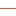

<!doctype html>
<html lang="en">
    <head>
        <meta charset="utf-8">
        <meta http-equiv="X-UA-Compatible" content="IE=edge">
        <meta name="viewport" content="initial-scale=1,user-scalable=no,maximum-scale=1,width=device-width">
        <meta name="mobile-web-app-capable" content="yes">
        <meta name="apple-mobile-web-app-capable" content="yes">
        <link rel="stylesheet" href="https://unpkg.com/leaflet@1.6.0/dist/leaflet.css"><link rel="stylesheet" href="https://cdnjs.cloudflare.com/ajax/libs/leaflet-locatecontrol/0.70.0/L.Control.Locate.min.css">
        <link rel="stylesheet" href="css/qgis2web.css"><link rel="stylesheet" href="https://stackpath.bootstrapcdn.com/font-awesome/4.7.0/css/font-awesome.min.css">
        <link rel="stylesheet" href="css/leaflet-control-geocoder.Geocoder.css">
        <link rel="stylesheet" href="css/codemirror.css">
        <link rel="stylesheet" href="css/MarkerCluster.css">
        <link rel="stylesheet" href="css/MarkerCluster.Default.css">
        <link href='http://fonts.googleapis.com/css?family=Lato:900,300' rel='stylesheet' type='text/css'>
        <link href="http://maxcdn.bootstrapcdn.com/font-awesome/4.1.0/css/font-awesome.min.css" rel="stylesheet">


        <style>
        html, body, #map {
            width: 100%;
            height: 100%;
            padding: 0;
            margin: 0;
        }
        </style>
        <title></title>
    </head>
    <body>
        <div id="map">
        </div>
        
     
        <script type="text/javascript" src="data/rios_json.js"></script>
        <script src="js/qgis2web_expressions.js"></script>
        <script src="https://unpkg.com/leaflet@1.6.0/dist/leaflet.js"></script><script src="https://cdnjs.cloudflare.com/ajax/libs/leaflet-locatecontrol/0.70.0/L.Control.Locate.min.js"></script>
        <script src="js/multi-style-layer.js"></script>
        <script src="js/leaflet-svg-shape-markers.min.js"></script>
        <script src="js/leaflet.rotatedMarker.js"></script>
        <script src="js/leaflet.pattern.js"></script>
        <script src="js/leaflet-hash.js"></script>
        <script src="js/Autolinker.min.js"></script>
        <script src="js/rbush.min.js"></script>
        <script src="js/labelgun.min.js"></script>
        <script src="js/labels.js"></script>
        <script src="js/leaflet-control-geocoder.Geocoder.js"></script>
        <script src="data/alimentadoras_1.js"></script>
        <script src="data/expresa_2.js"></script>
        <script src="data/pretroncal_3.js"></script>
        <script src="data/troncal_4.js"></script>
        <script src="data/estaciones_3115_5.js"></script>
        <script src="js/leaflet.geocsv-src.js"></script>
        <script src="js/jquery.js"></script>
        <script src="js/leaflet.markercluster-src.js"></script>
        <script src="https://cdn.jsdelivr.net/npm/leaflet-easyprint@2.1.9/dist/bundle.min.js"></script>
        
        <script src="js/leaflet.browser.print.js"></script>
        <script src="js/leaflet.browser.print.min.js"></script>
        

        

       
        <script>
        var highlightLayer;
        function highlightFeature(e) {
            highlightLayer = e.target;

            if (e.target.feature.geometry.type === 'LineString') {
              highlightLayer.setStyle({
                color: '#ffff00',
              });
            } else {
              highlightLayer.setStyle({
                fillColor: '#ffff00',
                fillOpacity: 1
              });
            }
        }
        var map = L.map('map', {
            zoomControl:true, maxZoom:24, minZoom:1
        }).fitBounds([[3.4173588566729753,-76.55338928768452],[3.449136066680017,-76.49698429483009]]);

        //marcas
        var marker = L.marker([3.4173588566729753,-76.55338928768452]).addTo(map);
        var circle = L.circle([3.4173588566729753,-76.55338928768452], {color: 'blue', fillColor: '#f03', fillOpacity: 0.5, radius: 500}).addTo(map);
        var polygon = L.polygon([
            [3.4153588566729753,-76.54538928768452],
            [3.4174588566729753,-76.54338928768452],
            [3.4170588566729753,-76.55038928768452]
            ]).addTo(map);
        // wms
            var wmsLayer = L.tileLayer.wms('http://ws-idesc.cali.gov.co:8081/geoserver/wms?service=WMS&version=1.1.0', {layers:'idesc:mc_comunas'}).addTo(map);

       
        // geojson
        
        

        function getColor(d) {
        return d > 100000000 ? '#800026' : 
        d > 50000000 ? '#BD0026' : 
        d > 20000000 ? '#E31A1C' : 
        d > 10000000 ? '#FC4E2A' : 
        d > 5000000 ? '#FD8D3C' : 
        d > 2000000 ? '#FEB24C' : 
        d > 1000000 ? '#FED976' : 
        '#FFEDA0'; 
        }
        
        function style(feature) { 
        return { 
        fillColor: getColor(
        feature.properties.POP_EST), 
        weight: 3, 
        opacity: 1, 
        color: 'white', 
        dashArray: '3', 
        fillOpacity: 0.7 
        };
        }

        function popup(feature, layer) { 
        if (feature.properties && feature.properties.nombre) 
        { 
        layer.bindPopup(feature.properties.nombre); 
        } 
        }

        var rios = geojson = L.geoJson(rios_json, { 
        style: style, onEachFeature: popup 
        }) 
        .addTo(map);

        

        var hash = new L.Hash(map);
        map.attributionControl.setPrefix('<a href="https://github.com/tomchadwin/qgis2web" target="_blank">qgis2web</a> &middot; <a href="https://leafletjs.com" title="A JS library for interactive maps">Leaflet</a> &middot; <a href="https://qgis.org">QGIS</a>');
        L.control.locate({locateOptions: {maxZoom: 19}}).addTo(map);
        var bounds_group = new L.featureGroup([]);
        function setBounds() {
        }
        var layer_OpenStreetMap_0 = L.tileLayer('https://tile.thunderforest.com/transport-dark/{z}/{x}/{y}.png?apikey=bc623ed9931345e3bbe73c733ada761b', {
            accessToken: 'bc623ed9931345e3bbe73c733ada761b'
        });

            //impresora

            var customActionToPrint = function(context, mode) {
				return function() {
					window.alert("We are printing the MAP. Let's do Custom print here!");
					context._printCustom(mode);
				}
			}

            L.control.browserPrint({
                printLayer: L.tileLayer('https://tile.thunderforest.com/transport-dark/{z}/{x}/{y}.png?apikey=bc623ed9931345e3bbe73c733ada761b', {
                    accessToken: 'bc623ed9931345e3bbe73c733ada761b',
                            	subdomains: 'abcd',
                            	minZoom: 1,
                            	maxZoom: 16,
                            	ext: 'png'
                            }),
                closePopupsOnPrint: false,
				printModes: [
					L.control.browserPrint.mode.landscape("Tabloid VIEW", "Tabloid"),
					L.control.browserPrint.mode("Alert", "User specified print action", "A6", customActionToPrint, false),
					L.control.browserPrint.mode.landscape(),
					"PORTrait",
					L.control.browserPrint.mode.auto("Auto", "B4"),
					L.control.browserPrint.mode.custom("Séléctionnez la zone", "B5")
				]

            }).addTo(map);
        
          // impresora

        layer_OpenStreetMap_0;
        map.addLayer(layer_OpenStreetMap_0);
        function pop_alimentadoras_1(feature, layer) {
            layer.on({
                mouseout: function(e) {
                    for (i in e.target._eventParents) {
                        e.target._eventParents[i].resetStyle(e.target);
                    }
                },
                mouseover: highlightFeature,
            });
            var popupContent = '<table>\
                    <tr>\
                        <td colspan="2">' + (feature.properties['gid'] !== null ? Autolinker.link(feature.properties['gid'].toLocaleString(), {truncate: {length: 30, location: 'smart'}}) : '') + '</td>\
                    </tr>\
                    <tr>\
                        <td colspan="2">' + (feature.properties['ruta'] !== null ? Autolinker.link(feature.properties['ruta'].toLocaleString(), {truncate: {length: 30, location: 'smart'}}) : '') + '</td>\
                    </tr>\
                    <tr>\
                        <td colspan="2">' + (feature.properties['nombre'] !== null ? Autolinker.link(feature.properties['nombre'].toLocaleString(), {truncate: {length: 30, location: 'smart'}}) : '') + '</td>\
                    </tr>\
                    <tr>\
                        <td colspan="2">' + (feature.properties['servicio'] !== null ? Autolinker.link(feature.properties['servicio'].toLocaleString(), {truncate: {length: 30, location: 'smart'}}) : '') + '</td>\
                    </tr>\
                    <tr>\
                        <td colspan="2">' + (feature.properties['fecha_plan'] !== null ? Autolinker.link(feature.properties['fecha_plan'].toLocaleString(), {truncate: {length: 30, location: 'smart'}}) : '') + '</td>\
                    </tr>\
                </table>';
            layer.bindPopup(popupContent, {maxHeight: 400});
        }

        function style_alimentadoras_1_0() {
            return {
                pane: 'pane_alimentadoras_1',
                opacity: 1,
                color: 'rgba(114,155,111,1.0)',
                dashArray: '',
                lineCap: 'square',
                lineJoin: 'bevel',
                weight: 1.0,
                fillOpacity: 0,
                interactive: true,
            }
        }
        map.createPane('pane_alimentadoras_1');
        map.getPane('pane_alimentadoras_1').style.zIndex = 401;
        map.getPane('pane_alimentadoras_1').style['mix-blend-mode'] = 'normal';
        var layer_alimentadoras_1 = new L.geoJson(json_alimentadoras_1, {
            attribution: '',
            interactive: true,
            dataVar: 'json_alimentadoras_1',
            layerName: 'layer_alimentadoras_1',
            pane: 'pane_alimentadoras_1',
            onEachFeature: pop_alimentadoras_1,
            style: style_alimentadoras_1_0,
        });
        bounds_group.addLayer(layer_alimentadoras_1);
        map.addLayer(layer_alimentadoras_1);
        function pop_expresa_2(feature, layer) {
            layer.on({
                mouseout: function(e) {
                    for (i in e.target._eventParents) {
                        e.target._eventParents[i].resetStyle(e.target);
                    }
                },
                mouseover: highlightFeature,
            });
            var popupContent = '<table>\
                    <tr>\
                        <td colspan="2"><strong>gid</strong><br />' + (feature.properties['gid'] !== null ? Autolinker.link(feature.properties['gid'].toLocaleString(), {truncate: {length: 30, location: 'smart'}}) : '') + '</td>\
                    </tr>\
                    <tr>\
                        <td colspan="2">' + (feature.properties['ruta'] !== null ? Autolinker.link(feature.properties['ruta'].toLocaleString(), {truncate: {length: 30, location: 'smart'}}) : '') + '</td>\
                    </tr>\
                    <tr>\
                        <td colspan="2">' + (feature.properties['nombre'] !== null ? Autolinker.link(feature.properties['nombre'].toLocaleString(), {truncate: {length: 30, location: 'smart'}}) : '') + '</td>\
                    </tr>\
                    <tr>\
                        <td colspan="2">' + (feature.properties['servicio'] !== null ? Autolinker.link(feature.properties['servicio'].toLocaleString(), {truncate: {length: 30, location: 'smart'}}) : '') + '</td>\
                    </tr>\
                    <tr>\
                        <td colspan="2">' + (feature.properties['fecha_plan'] !== null ? Autolinker.link(feature.properties['fecha_plan'].toLocaleString(), {truncate: {length: 30, location: 'smart'}}) : '') + '</td>\
                    </tr>\
                </table>';
            layer.bindPopup(popupContent, {maxHeight: 400});
        }
        

        function style_expresa_2_0() {
            return {
                pane: 'pane_expresa_2',
                opacity: 1,
                color: 'rgba(164,113,88,1.0)',
                dashArray: '',
                lineCap: 'square',
                lineJoin: 'bevel',
                weight: 1.0,
                fillOpacity: 0,
                interactive: true,
            } 
        }
        map.createPane('pane_expresa_2');
        map.getPane('pane_expresa_2').style.zIndex = 402;
        map.getPane('pane_expresa_2').style['mix-blend-mode'] = 'normal';
        var layer_expresa_2 = new L.geoJson(json_expresa_2, {
            attribution: '',
            interactive: true,
            dataVar: 'json_expresa_2',
            layerName: 'layer_expresa_2',
            pane: 'pane_expresa_2',
            onEachFeature: pop_expresa_2,
            style: style_expresa_2_0,
        });
        bounds_group.addLayer(layer_expresa_2);
        map.addLayer(layer_expresa_2);
        function pop_pretroncal_3(feature, layer) {
            layer.on({
                mouseout: function(e) {
                    for (i in e.target._eventParents) {
                        e.target._eventParents[i].resetStyle(e.target);
                    }
                },
                mouseover: highlightFeature,
            });
            var popupContent = '<table>\
                    <tr>\
                        <td colspan="2">' + (feature.properties['gid'] !== null ? Autolinker.link(feature.properties['gid'].toLocaleString(), {truncate: {length: 30, location: 'smart'}}) : '') + '</td>\
                    </tr>\
                    <tr>\
                        <td colspan="2">' + (feature.properties['ruta'] !== null ? Autolinker.link(feature.properties['ruta'].toLocaleString(), {truncate: {length: 30, location: 'smart'}}) : '') + '</td>\
                    </tr>\
                    <tr>\
                        <td colspan="2">' + (feature.properties['nombre'] !== null ? Autolinker.link(feature.properties['nombre'].toLocaleString(), {truncate: {length: 30, location: 'smart'}}) : '') + '</td>\
                    </tr>\
                    <tr>\
                        <td colspan="2">' + (feature.properties['servicio'] !== null ? Autolinker.link(feature.properties['servicio'].toLocaleString(), {truncate: {length: 30, location: 'smart'}}) : '') + '</td>\
                    </tr>\
                    <tr>\
                        <td colspan="2">' + (feature.properties['fecha_plan'] !== null ? Autolinker.link(feature.properties['fecha_plan'].toLocaleString(), {truncate: {length: 30, location: 'smart'}}) : '') + '</td>\
                    </tr>\
                </table>';
            layer.bindPopup(popupContent, {maxHeight: 400});
        }

        function style_pretroncal_3_0() {
            return {
                pane: 'pane_pretroncal_3',
                opacity: 1,
                color: 'rgba(252,244,244,1.0)',
                dashArray: '',
                lineCap: 'square',
                lineJoin: 'bevel',
                weight: 1.0,
                fillOpacity: 0,
                interactive: true,
            }
        }
        map.createPane('pane_pretroncal_3');
        map.getPane('pane_pretroncal_3').style.zIndex = 403;
        map.getPane('pane_pretroncal_3').style['mix-blend-mode'] = 'normal';
        var layer_pretroncal_3 = new L.geoJson(json_pretroncal_3, {
            attribution: '',
            interactive: true,
            dataVar: 'json_pretroncal_3',
            layerName: 'layer_pretroncal_3',
            pane: 'pane_pretroncal_3',
            onEachFeature: pop_pretroncal_3,
            style: style_pretroncal_3_0,
        });
        bounds_group.addLayer(layer_pretroncal_3);
        map.addLayer(layer_pretroncal_3);
        function pop_troncal_4(feature, layer) {
            layer.on({
                mouseout: function(e) {
                    for (i in e.target._eventParents) {
                        e.target._eventParents[i].resetStyle(e.target);
                    }
                },
                mouseover: highlightFeature,
            });
            var popupContent = '<table>\
                    <tr>\
                        <td colspan="2">' + (feature.properties['gid'] !== null ? Autolinker.link(feature.properties['gid'].toLocaleString(), {truncate: {length: 30, location: 'smart'}}) : '') + '</td>\
                    </tr>\
                    <tr>\
                        <td colspan="2">' + (feature.properties['ruta'] !== null ? Autolinker.link(feature.properties['ruta'].toLocaleString(), {truncate: {length: 30, location: 'smart'}}) : '') + '</td>\
                    </tr>\
                    <tr>\
                        <td colspan="2">' + (feature.properties['nombre'] !== null ? Autolinker.link(feature.properties['nombre'].toLocaleString(), {truncate: {length: 30, location: 'smart'}}) : '') + '</td>\
                    </tr>\
                    <tr>\
                        <td colspan="2">' + (feature.properties['servicio'] !== null ? Autolinker.link(feature.properties['servicio'].toLocaleString(), {truncate: {length: 30, location: 'smart'}}) : '') + '</td>\
                    </tr>\
                    <tr>\
                        <td colspan="2">' + (feature.properties['fecha_plan'] !== null ? Autolinker.link(feature.properties['fecha_plan'].toLocaleString(), {truncate: {length: 30, location: 'smart'}}) : '') + '</td>\
                    </tr>\
                </table>';
            layer.bindPopup(popupContent, {maxHeight: 400});
        }

        
        function style_troncal_4_0() {
            return {
                pane: 'pane_troncal_4',
                opacity: 1,
                color: 'rgba(0,0,0,0.0)',
                dashArray: '',
                lineCap: 'round',
                lineJoin: 'round',
                weight: 10.0,
                fillOpacity: 0,
                interactive: true,
            }
        }
        function style_troncal_4_1() {
            return {
                pane: 'pane_troncal_4',
                opacity: 1,
                color: 'rgba(255,255,255,1.0)',
                dashArray: '',
                lineCap: 'round',
                lineJoin: 'round',
                weight: 3.0,
                fillOpacity: 0,
                interactive: true,
            }
        }
        map.createPane('pane_troncal_4');
        map.getPane('pane_troncal_4').style.zIndex = 404;
        map.getPane('pane_troncal_4').style['mix-blend-mode'] = 'normal';
        var layer_troncal_4 = new L.geoJson.multiStyle(json_troncal_4, {
            attribution: '',
            interactive: true,
            dataVar: 'json_troncal_4',
            layerName: 'layer_troncal_4',
            pane: 'pane_troncal_4',
            onEachFeature: pop_troncal_4,
            styles: [style_troncal_4_0,style_troncal_4_1,]
        });
        bounds_group.addLayer(layer_troncal_4);
        map.addLayer(layer_troncal_4);
        function pop_estaciones_3115_5(feature, layer) {
            layer.on({
                mouseout: function(e) {
                    for (i in e.target._eventParents) {
                        e.target._eventParents[i].resetStyle(e.target);
                    }
                },
                mouseover: highlightFeature,
            });
            var popupContent = '<table>\
                    <tr>\
                        <td colspan="2"><strong>gid</strong><br />' + (feature.properties['gid'] !== null ? Autolinker.link(feature.properties['gid'].toLocaleString(), {truncate: {length: 30, location: 'smart'}}) : '') + '</td>\
                    </tr>\
                    <tr>\
                        <td colspan="2">' + (feature.properties['estacion'] !== null ? Autolinker.link(feature.properties['estacion'].toLocaleString(), {truncate: {length: 30, location: 'smart'}}) : '') + '</td>\
                    </tr>\
                    <tr>\
                        <td colspan="2">' + (feature.properties['direccion'] !== null ? Autolinker.link(feature.properties['direccion'].toLocaleString(), {truncate: {length: 30, location: 'smart'}}) : '') + '</td>\
                    </tr>\
                    <tr>\
                        <td colspan="2">' + (feature.properties['clase'] !== null ? Autolinker.link(feature.properties['clase'].toLocaleString(), {truncate: {length: 30, location: 'smart'}}) : '') + '</td>\
                    </tr>\
                </table>';
            layer.bindPopup(popupContent, {maxHeight: 400});
        }

        function style_estaciones_3115_5_0() {
            return {
                pane: 'pane_estaciones_3115_5',
                shape: 'diamond',
                radius: 8.8,
                opacity: 1,
                color: 'rgba(61,128,53,1.0)',
                dashArray: '',
                lineCap: 'butt',
                lineJoin: 'miter',
                weight: 2.0,
                fill: true,
                fillOpacity: 1,
                fillColor: 'rgba(84,176,74,1.0)',
                interactive: true,
            }
        }
        map.createPane('pane_estaciones_3115_5');
        map.getPane('pane_estaciones_3115_5').style.zIndex = 405;
        map.getPane('pane_estaciones_3115_5').style['mix-blend-mode'] = 'normal';
        var layer_estaciones_3115_5 = new L.geoJson(json_estaciones_3115_5, {
            attribution: '',
            interactive: true,
            dataVar: 'json_estaciones_3115_5',
            layerName: 'layer_estaciones_3115_5',
            pane: 'pane_estaciones_3115_5',
            onEachFeature: pop_estaciones_3115_5,
            pointToLayer: function (feature, latlng) {
                var context = {
                    feature: feature,
                    variables: {}
                };
                return L.shapeMarker(latlng, style_estaciones_3115_5_0(feature));
            },
        });
        bounds_group.addLayer(layer_estaciones_3115_5);
        map.addLayer(layer_estaciones_3115_5);
        var osmGeocoder = new L.Control.Geocoder({
            collapsed: true,
            position: 'topleft',
            text: 'Search',
            title: 'Testing'
        }).addTo(map);
        document.getElementsByClassName('leaflet-control-geocoder-icon')[0]
        .className += ' fa fa-search';
        document.getElementsByClassName('leaflet-control-geocoder-icon')[0]
        .title += 'Search for a place';

        
        //GEOCSV
        var bankias = L.geoCsv(null, {
	onEachFeature: function (feature, layer) {
		var popup = '';
		for (var clave in feature.properties) {
			var title = bankias.getPropertyTitle(clave);
			popup += '<b>'+title+'</b><br />'+feature.properties[clave]+'<br /><br />';
		}
		layer.bindPopup(popup);
	},
    pointToLayer: function (feature, latlng) {
		return L.marker(latlng, {
			icon:L.icon({
				iconUrl: 'marcador-bankia.png',
				shadowUrl: 'marker-shadow.png',
				iconSize: [25,41],
				shadowSize:   [41, 41],
				shadowAnchor: [13, 20]
			})
		});
	},
	firstLineTitles: true
});
$.ajax ({
	type:'GET',
	dataType:'text',
	url:'bankias.csv',
   error: function() {
     alert('No se pudieron cargar los datos');
   },
	success: function(csv) {
      var cluster = new L.MarkerClusterGroup();
		bankias.addData(csv);
		cluster.addLayer(bankias);
		map.addLayer(cluster);
		map.fitBounds(cluster.getBounds());
	},
   complete: function() {
      $('#cargando').delay(500).fadeOut('slow');
   }
});
        
        
        //GEOCSV


        var baseMaps = {};
        L.control.layers(baseMaps,{' estaciones_3115': layer_estaciones_3115_5,
        ' troncal': layer_troncal_4,' pretroncal': layer_pretroncal_3,
        ' expresa': layer_expresa_2,' alimentadoras': layer_alimentadoras_1,
        ' poligono_creado': polygon,
        ' circulo_creado': circle,
        ' marca_creada': marker,
        ' wms_comunas': wmsLayer,
        ' rios_json_sub': rios,
        ' geocsv': bankias,

        "Mapa_base": layer_OpenStreetMap_0,}).addTo(map);
        setBounds();
        
        var i = 0;
        layer_troncal_4.eachLayer(function(layer) {
            var context = {
                feature: layer.feature,
                variables: {}
            };
            layer.bindTooltip((layer.feature.properties['nombre'] !== null?String('<div style="color: #ffffff; font-size: 10pt; font-family: \'Modern No. 20\', sans-serif;">' + layer.feature.properties['nombre']) + '</div>':''), {permanent: true, offset: [-0, -16], className: 'css_troncal_4'});
            labels.push(layer);
            totalMarkers += 1;
              layer.added = true;
              addLabel(layer, i);
              i++;
        });
        var i = 0;
        layer_estaciones_3115_5.eachLayer(function(layer) {
            var context = {
                feature: layer.feature,
                variables: {}
            };
            layer.bindTooltip((layer.feature.properties['estacion'] !== null?String('<div style="color: #ffffff; font-size: 20pt; font-family: \'Modern No. 20\', sans-serif;">' + layer.feature.properties['estacion']) + '</div>':''), {permanent: true, offset: [-10, -26], className: 'css_estaciones_3115_5'});
            labels.push(layer);
            totalMarkers += 1;
              layer.added = true;
              addLabel(layer, i);
              i++;
        });
        resetLabels([layer_troncal_4,layer_estaciones_3115_5]);
        map.on("zoomend", function(){
            resetLabels([layer_troncal_4,layer_estaciones_3115_5]);
        });
        map.on("layeradd", function(){
            resetLabels([layer_troncal_4,layer_estaciones_3115_5]);
        });
        map.on("layerremove", function(){
            resetLabels([layer_troncal_4,layer_estaciones_3115_5]);
        });

        


       

     
       
        </script>
    </body>
</html>
